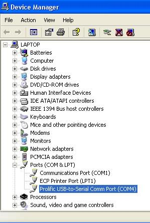
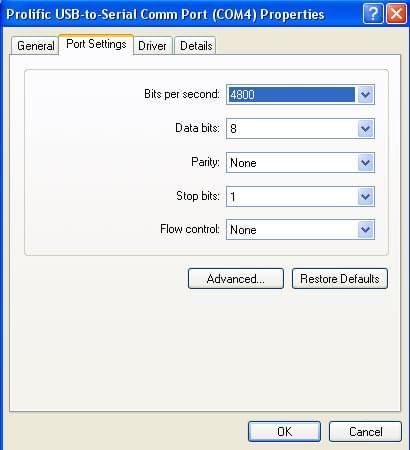

GPS Setup


Below we describe only the basics of getting a gps up and running.

For a full description of all options read Options Setting
Make sure your GPS is set to output positions using the WGS 84 Geodetic Datum. This is less of an issue nowadays, compared to, say 10 - 15 years ago.
Some units can't be changed, and is permanently set to WGS 84. The BU-353 is one of those.
Matrix of GPS Devices
Matrix of GPS Devices
Refer to GPS Setup & Status
Windows 10
Windows 10 users generally must purchase a new GPS Puck specifically configured for Windows 10. For Example, the BU-353 which works with earlier versions of Windows does not work without an elaborate work around involving preventing automatic update of Prolific USB drivers by the OS. It is far easier and more reliable to simply purchase another Windows 10 compatible GPS Puck (similar to the BU-353 S4) and use the associated drivers.
This Windows 8 Microsolft GNSS drive has been found to be helpful. (Also described more completely below.)
Windows XP/Vista/7/8
Note that the extensive use of the cheap gps mouse BU-353 as an example below, should only be seen as an illustration.
To use OpenCPN with a GPS, a GPS receiver is needed.
There are a variety of possible choices for a GPS receiver:
- A computer, such as a Sony Vaio P has a built in GPS receiver
- A NMEA Expander to amplify a nmea stream to multiple listeners
- A hand-held GPS receiver
- A dedicated GPS receiver
The remainder of this section describes using OpenCPN with a dedicated GPS receiver, however, the instructions for a dedicated receiver will be similar for any serial/USB connected NMEA data stream.
A Dedicated GPS Receiver
There are several companies making dedicated GPS receivers. The Supplementary Hardware section for GPS devices lists several manufacturers.
NMEA has traditionally been implemented as a serial protocol and therefore, even if a USB connection is used, there needs to be a USB to Serial Port conversion. The specific driver for the each GPS receiver will handle this conversion.
An Example - Configuring BU-353
It is not necessary to use the installation disk to setup the BU-353. Following the steps listed below will result in the latest driver being installed.
- Download the latest driver from Prolific - http://www.usglobalsat.com/s-24-support-drivers.aspx#A
- Unzip and install the driver
- Plug in the BU-353.
- Start → (Right Click) My Computer → Properties → Hardware →Device Manager
or Start→Run devmgmt.msc
- Expand Ports
- Look for the “Prolific USB-to-Serial Comm Port” and note the com port number (e.g., COM4)

- Right click on the “Prolific USB-to-Serial Comm Port”. Choose Driver
- Select 4800 bits per second, 8 data bits, None parity, 1 stop bit, and None for Flow Control

- Start OpenCPN
- Click on the Options Icon

- Select “Connections”, and “Add Connection” and “Serial”
- Under “Data Port” select the Com port noted in #6
- Choose OK
- Select Auto Follow to center the map over your GPS location
Troubleshooting
There is a small LED located on the BU-353. If the LED is off there is no power being received. Check the connection.
If the LED is solid it indicates the BU-353 is searching for a GPS signal. Try moving the GPS receiver to a clear location.
If the LED is flashing it indicates the BU-353 has a position fix and is transmitting data.
- Try viewing the NMEA data stream in OpenCPN. Choose Options→Connections→Show NMEA Debug Window
- Alternatively, a diagnostic program is included on the installation CD called GPSInfo.exe. Launch this program to install the diagnostic utility.
If it appears that the NMEA data stream is being received, the most likely issue is that OpenCPN is not centered over your location. Click AutoFollow to center the map at your GPS location.
Known Issues
If you change the USB port for the GPS receiver Prolific will reassign the COM port number. This will require repeating steps 4-12 above. If you are having trouble with Prolific drivers and an Error Code, try reading this page http://www.ifamilysoftware.com/news37.html
On some computer / GPS receiver combinations when the computer resumes from Stand By the GPS receiver will no longer transmit its NMEA data stream, and only garbage instead of ASCII characters will be visible in the NMEA Data Stream Window. The red indicator led will not work.
To change back to NMEA mode search for and download SIRFDemo.exe.
Unpack and start. Set correct Baud rate and and com port as above.
Click connect to data source button. Action → Switch to NMEA protocol, then exit.
There are many more settings available in SIRFDemo.exe
An alternative workaround for this issue is provided by using a COM port splitter such as XPort http://www.curioustech.net/xport.html
- Download XPort.
- Unzip it to a folder of your choice
- Double Click XPort.exe
- Set the Baud Rate to 4800
- Under Enable Ports add an entry for COM10
- Click “Find GPS”. The port returned should match the port identified in Step #6 in the Configuring BU-353 Section
- Select Prolific USB-to-Serial Comm Port in the check box section
- Return to OpenCPN
- Click on the ToolBox Icon
- Select GPS
Under NMEA Data Source change the Com port to COM10
How to use OpenCPN on a tablet windows 8 with GNSS Sensor
Linux
To proceed, the “user” you use on your computer must belong to a group that is allowed to open serial connections. This group is normally “dialout” on Debian based Linuxes, including Ubuntu, and “uucp” on Red Hat based distributions. Read more in Connections.
Check your status by writing “groups” on a command line. The response will be all groups that the user belongs to. Make sure that “dialout” or “uucp” is included. If not, you have to add your user to this group. There are many ways to do this, one is to issue this command:
“sudo usermod -a -G dialout $USER”. Logout of your current session for group changes to take effect.
This applies to many Debian based distributions, for other distros just drop the sudo and do the command as root, using “su”.
All major Linux distribution includes a graphical user settings dialog, where adding a user to a group, could be fixed.
Two methods are available, direct connection or through gpsd.
We start with gpsd.
- Install the gpsd and gpsd-clients packages
$ sudo apt-get install gpsd gpsd-clients
- Go to Options→ Connections→ Add Connection and select “Network” plus the GPSD radio button. Address should be “localhost” and DataPorts should be set to 2947.
- On Ubuntu 10.04 and later, that is really all you have to do. When you plug in your gps this will trigger gpsd to start.
- “xgps” is client that comes with the gpsd-clients package, and is useful for testing that the gps and gpsd is working properly. If xgps isn't working, it's a gps or gpsd problem, not an OpenCPN problem
Direct connection.
- Make sure that gpsd isn't running then connect your gps and start OpenCPN. On Ubuntu 12.04 the easiest way to achieve this is to uninstall gpsd.
- In the Options→Connections → Add Connection, select “Serial”.Set “dataPort to the port where you plugged in your gps. If you plugged in BU 353 this will probably be /dev/ttyUSB0.
- Choose 4800 baud, unless you know that the gps is set to something else.
- The gps should now work…if not, check the NMEA data stream window. If only binary garbage is visible, the gps has to be reset to NMEA mode, see more about this above in windows section. An alternative is to use gpsd, that will work with the gps in Sirf mode.
- To do this in Linux for BU 353 as well as many other gps:es, make sure that gpsd is running and that the package “gpsd-clients” is installed. On Ubuntu 12.04 gpsd needs to be temporarily installed. Make sure to kill any instances of gpsd with the command:
"sudo killall gpsd"
- This command will put the GPS into NMEA mode.
* $gpsctl -n
- If that doesn't work, try
$ gpsctl -f -n /dev/ttyUSB0
- This will force a low-level access, bypassing gpsd. For more information: $man gpsctl
- More information is as always available through “man gpsctl” Close down OpenCPN before running gpsctl.
None of this is normally noticed when using gpsd, as this program reads both NMEA and SIRF binary sentences.
More Linux hints
- If you can't connect to a physical port, such as /dev/ttyUSBO, indicated by a line in the opencpn.log file. Check that you, as a user, belong to the group “dialout”. To see which groups you belong to, run the command “groups”. Not all Linux distributions add the user to this group by default. To add yourself to the dialout group
"sudo usermod -a -G dialout $USER"
- Check if gpsd is working:
$ ps aux | grep gpsd
nobody 12338 0.3 0.1 4124 1448 ? S<s 18:31 0:00 gpsd -F /var/run/gpsd.sock
you 12356 0.0 0.0 3036 800 pts/3 S+ 18:32 0:00 grep –color=tty -d skip gpsd
- This or similar responses indicate that gpsd is running. If you only have something like the second line,…it is not running.
- Run the command
"$ls -lrtd /dev/*|tail -10"
- and see the 10 latest created device files. Run this just after plugin in your gps to see which device was created.
- Determine which device your GPS is on your linux system by checking the startup. Look for a line that says something about GPS and /dev/ttyUSB# in the command “dmesg”
- Or even better, after connecting a gps mouse, BU-353, we look for a dmesg by running this command.
$ dmesg | grep tty
and get this response back.
[13616.095305] usb 2-3: pl2303 converter now attached to ttyUSB0
- Add a script to start gpsd, if this is not done by your distribution. I saved mine as startgps and set the executable attribute. Edit line 3 to match your device, ie /dev/ttyUSB0
#!/bin/sh
sudo killall gpsd
sudo gpsd -n -D 2 /dev/ttyUSB0
$ ./startgps
If this is a new installation, click on the Toolbox icon and configure your GPS source, chart directories, and other settings.
Other Distributions
Udev Rules
- If you have problem with, for example gps, connecting to different ports each time you restart udev is your friend.
- udev supports persistent device naming, which does not depend on, for example, the order in which the devices are plugged into the system. The default udev setup provides persistent names for storage devices.
- There is a lot about udev on the Internet. For OpenCPN specifics, read the cruisersforum.
Bluetooth GPS
More user experience of setting up bluetooth GPS are welcome, as the notes below just reflects a few users experience. Please use the Forum.
Ubuntu 10.10 and older.
If you have a bluetooth GPS you will need to first configure it through the standard Ubuntu Bluetooth “set up new device ” proceedure. Once you have done that you will need to find what the address of the GPS is. To do that you run this command:
"sudo hcitool scan"
it will then start looking for the Bluetooth GPS and hopefully find your GPS. You should see something similar to:
Scanning …
00:1C:88:10:D3:4D iBT-GPS
In this case I have a IBT-GPS at address 00:1C:88:10:D3:4D (Your GPS address will be different)
Next we have to bind the GPS address to a “virtual” device OpenCPN understands in this case rfcomm0. We do this with the following command:
sudo rfcomm bind /dev/rfcomm0 00:1C:88:10:D3:4D
Note put your GPS address in this line
You should not have to run these commands each time your linux is restarted as it will remember your GPS address.
Now all you need to do is go into OpenCPN Toolbox and select GPS.
Now in the NMEA Data Source options select from the pulldown menu:
“/dev/rfcomm0”, or write it in the box, if not present as an alternative.
That's it - you should now have a Bluetooth GPS Connected.
Ubuntu 12.04
-Pair GPS with bluetooth icon
-break connection with bluetooth icon
-get device id: sudo hcitool scan
-get channel for gps: sdptool records 00:02:78:0A:4E:E9 (put your actual number here)
-sudo gedit /etc/bluetooth/rfcomm.conf #edit rfcomm input file. Text should be:
# RFCOMM configuration file.
#
# $Id: rfcomm.conf,v 1.1 2002/10/07 05:58:18 maxk Exp $
# rfcomm0 {
# Automatically bind the device at startup
bind yes;
'
# Bluetooth address of the device
device xx:xx:xx:xx:xx:xx;
'
# RFCOMM channel for the connection
channel 1;#use channel number as provided by sdptool records XX:XX:XX:XX:XX:XX
'
# Description of the connection
comment "Your GPS Device Here";
}
'
sudo rfcomm release 0 (not strictly neccesary)
.
sudo rfcomm connect 0
You only need to to this once, not required if you reboot at this point).
…connected /dev/rfcomm0 to 00:00:00:00:00:00 (whatever)
Press CTRL-C for hangup
in a separate terminal, you can test the connection with
rfcomm show /dev/rfcomm0
…rfcomm0: 00:08:1B:14:18:B6 channel 1 connected [tty-attached]
Your bluetooth GPS should now be working in open CPN.
Run
sudo opencpn
To check that it works (/dev/rfcomm0 under GPS NMEA data source). If it works, try running opencpn without sudo, chances are that you cannot see the gps. if this is the case, use the following fix:
sudo usermod -a -G dialout $USER ''
Fedora
Run
hcitool scan
to get the ID of your bluetooth gps device.
Make a file “rfcomm.config” and put it in /etc/bluetooth.
This file is already present in Ubuntu, but needs editing for persistent connection.
# RFCOMM configuration file.
#
# $Id: rfcomm.conf,v 1.1 2002/10/07 05:58:18 maxk Exp $
#
rfcomm0 {
# Automatically bind the device at startup
bind yes;
# Bluetooth address of the device
device XX:XX:XX:XX:XX:XX;
# RFCOMM channel for the connection
channel 1;
# Description of the connection
comment "Your GPS Device Here";
}
Change XX:XX:XX…. to your device ID
Open Opencpn and write /dev/rfcomm0 as GPS NMEA device. Note that you can add it yourself by writing directly into the scroll down box.
Permissions for /dev/rfcomm0 are for group “dialout”. Make sure you belong to that group.
The command “groups” will show all the groups you belong to.
Make sure that “gpsd” isn't running, issuing “killall gpsd” as root.
Mac OSX
Attaching a GPS device to a Mac is done via one of the USB ports. Whether using a device with its own USB lead or via a serial-USB adapter lead or an NMEA multiplexer with USB port, the appropriate OS X driver needs to be installed. Nearly all hardware uses one of just two chip makes: those from FTDI or Prolific. Both those companies make OS X drivers available on their web sites, but manufacturers of GPS devices usually package the driver with device.
When the driver is installed and the device connected, start OpenCPN, select the Toolbox and click the GPS tab. Open the “NMEA Data Source” menu & select the the device from the list. It is not always obvious which is the correct one, but in general the device will have a name starting: ”/dev/cu.“ or ”/dev/tty.“. Some manufacturers make it obvious, like ”/dev/cu.MiniPlex-99000125“, but others may be more generic, like: ”/dev/cu.usbserial“. Set the “NMEA Baud Rate” to 4800 and click “OK”. If the correct selection has been made, you should see the GPS status icon change from red to green.
Virtualized Environments
Use of Virtualized Environments such as Parallels, VM, VirtualBox, etc to run an alternative version of Opencpn on your Mac or PC are beyond the scope of this section. However experienced users are invited to report the specifics about using USB ports with Virtual Configurations. Please be specific about the setup and software and explain how virtual USB ports work in that environment. These commenta will eventually make their way into this section.
It should be noted that each Virtual Software handles virtualization of USB and Sharing differently. This can affect the connection and reliability of the connection for GPS.
OpenCPN is user powered, so we depend on User's sharing their experiences. Please assist us.
{kind=link}